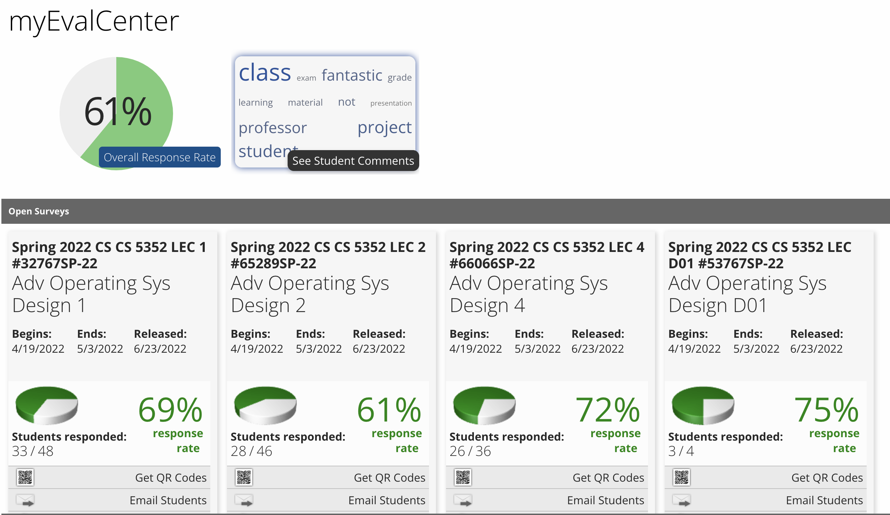

For Final:
- Apr 26: Final exam slides: All slides
- Quiz 1: Quiz 1
- Quiz 2: Quiz 2
- Quiz 3: Quiz 3
- Quiz 4: Quiz 4
- Quiz 5: Quiz 5
- Quiz 6: Quiz 6
- Quiz 7: Quiz 7
- The list of student talks for final exam: 1,2,4,5,6,9,10,11,15,16,17,18,23,24,25,26,27,31,38,44,59,60,119,123
- Example questions of final exam: Example questions
- Final exam date and time: Monday, May 9 7:30 p.m. to 10:00 p.m.
- Final exam Location: Our classrooom T Fuller Petr Eng Research 00110
- For distant students, you can do your final exam online (the same time)
https://texastech.zoom.us/j/92782788728
Announcements:
- May 3: Deadline today Course evaluation:
https://info.smartevals.com/

- Mar 24: 2021 TTU students:
Globe View
- Jan 24: Check the student Talks page to see the list of topics that have been approved.
If you do not have a topic yet please pick outside the approved topics or if you have any research paper that is related to advance operating system and you will like to present on please send me a mail.
The paper must have at least 10 pages.
Book and Slides:
Links:
Most Popular Operating Systems (Desktop & Laptops) 2003 - 2019: https://www.youtube.com/watch?v=eJuvKn5j_kE
Most Popular Smartphone Operating Systems 2007 - 2019 Android vs iOS: https://www.youtube.com/watch?v=HzkHlPa1wo8